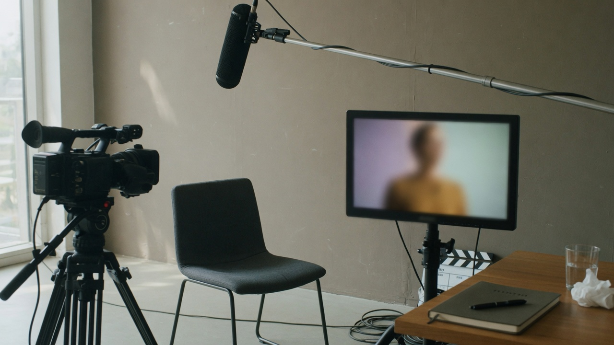

Draft · Unsigned · 23 September 2026
Publishing a Business Together: DreamNova and Leeya
A proposed method for researching, making, and publishing a business with a clear scope and human approval.
1. What this draft is
This draft says how a business can be published when DreamNova frames the work and Leeya Katz speaks. It is written so the two of them can sign it later. The lines at the end are empty.
It is a memorandum of a method. It is not a recollection of a meeting. No meeting is in the sources. It is not a joint invoice, a joint company, or a claim that a campaign has already gone public.
DreamNova, on the public site read that day, frames a job, shows the work, and delivers it: a site, a film, and a price written before the start. Leeya Katz, on her public pages and on the public channel, speaks Hebrew to people who run businesses. The order that joins those two crafts is the method in chapter 7.
THE KOSHER OPTION is the first case in front of that method. It is a case. It is not the shape of every trade either of them may take.
A companion research audit is available at books/RESEARCH_SOURCES.md. The sources used in this draft are listed at the end, with their addresses and reading date.
2. DreamNova, as the studio says it
On 23 September 2026 the page at https://dreamnova.studio carried this English line in the hero: “Independent creative studio · Design, film & AI.” The same page said: “A clear price. An agreed scope. Your approval before the balance.”
The footer on that page read “© 2026 · DESIGN + MOTION + AI.” That line is a copyright notice. This draft does not turn it into a founding date.
The page describes three moves, in its own words.
- Define.
- “Your goal, deliverables, price and acceptance criteria. Agreed in writing before work starts.”
- Review.
- “Your deposit starts the project. Review a working version and share feedback within the agreed scope.”
- Launch.
- “Approve the work, then pay the balance. Receive the agreed files, access and practical handover.”
That is the public frame: the price and the scope are written first, a working version is shown, and the files move after approval and the balance.
The same page says how a result is measured: the actions to track are enquiries, conversations, and appointments. Sales also depend on the offer, the traffic, and the follow-up. A separate question on the page says that optional maintenance is scoped and priced on its own, and is never presented as free when it is not.
The films on the home page are labeled, in English, “AI creative demo · art direction example,” and “Three AI-created product concepts to explore your future art direction.” They are demonstrations of direction. This draft does not call them a client’s results.
Other names that resemble DreamNova appeared in search and belong to other businesses. This draft uses only https://dreamnova.studio.
3. A price written before the work
The public price grid at https://dreamnova.studio/pricing/?lang=en, read the same day, says these are the numbers printed on each offer page, not “from” ranges. It says the usual rule is that half starts the work and half is due after acceptance. It names exceptions on that same grid. This draft does not use those exceptions.
The grid also says that the source of truth is each offer page and its payment button, and that the grid itself does not charge. Where this draft prints a fee, the fee is copied from the page named beside it. Nothing here is a new quote.
4. The site and the film
These are the two deliveries this draft relies on. Both pages were read on 23 September 2026.
The site
https://dreamnova.studio/sites/?lang=en offers one bilingual landing page: one offer, mobile, and a next commercial action. The page prints a fixed total of 1 500 € or CA$1,850, a deposit of 750 € or CA$925, and a stated delivery of 5 days after intake. Optional maintenance is printed as 149 €/mois or CA$190/month.
The page says the scope is bounded before the work starts, and that the price stays credible for that reason. In the included list, as printed in English: one landing architecture, up to 7 sections; conversion copy in English and French; custom responsive design with WCAG AA; a call to action connected to payment or lead capture; deployment, baseline technical SEO, and two review rounds.
Out of scope, as printed: not an ecommerce store or a business application; no traffic or revenue promise; complex content production, legal translation, and photography are out of scope.
The page says the timeline starts after the deposit, the complete brief, and the required access. It says the deposit reserves production capacity, and the balance is due only after the agreed acceptance. It says maintenance is not mandatory.
“WCAG AA” is a line in that offer. This draft has not audited a delivered page against it.
The film
https://dreamnova.studio/motion/?lang=en offers 15-second films made from product photos, in a vertical format and a square format, for a social campaign. The page says the demonstrations carry no claim of advertising performance. It says views and sales also depend on the offer, the audience, and the distribution, and that no specific commercial result is guaranteed. It says advertising spend and campaign management are not included.
The entry package is 229 €. The home page prints the dollar figure as US$249. The motion page prints it as $249, and prints a deposit of 114,50 € or $124.50. The included lines read that day: one creative concept; vertical 9:16 and square 1:1; one revision round; delivery within 7 days of an approved brief. The home page’s note on timing says the stated delivery follows a complete brief and the required access.
The same motion page prints two further packages, with prices and deposits, and this draft does not restate line items it is not using:
| Package, as labeled | Price printed | Deposit printed |
|---|---|---|
| The first film | 229 € or $249 (home page: US$249) | 114,50 € or $124.50 |
| The campaign | 599 € or $649 | 299,50 € or $324.50 |
| The collection | 1 690 € or $1,790 | 845 € or $895 |
The home page also prints a separate pack that turns long material into 30 vertical clips, at 500 € or US$550, with one revision round. The price grid labels a related line “1 video → 30 Shorts · 48h” at $550 or 500 €, with half stated as $275 or 250 €. This draft records both wordings and does not collapse “7 days,” “5 days,” and “48h” into one promise. Each figure stays on the page that printed it.
DreamNova also publishes an inbound voice-agent pilot, with its own written price on https://dreamnova.studio/voice/?lang=en. That pilot is a different offer. It is not Leeya Katz’s voice, and this draft does not fold it into the method.
5. Leeya Katz, as her pages say it
On 23 September 2026 the page at https://leeyamedia.com was in Hebrew, lang="he-IL", right to left. The title was:
ליאה כץ - סוכנות יוטיוב לעסקי פרימיום
Translation for this draft: Leeya Katz — a YouTube agency for premium businesses.
The visible introduction read:
נעים להכיר, אני ליאה כץ. בונה אסטרטגיית שיווק ביוטיוב, לעסקים ומותגים, שלקוחות בוחרים לעבוד איתם ביוטיוב.
Translation: Pleased to meet you. I am Leeya Katz. I build a YouTube marketing strategy for businesses and brands whose clients choose to work with them on YouTube.
The studio line read:
הסטודיו שלי מתמחה בבניית משפכי שיווק מבוסס דאטה ביוטיוב למומחים, מותגים ובעלי עסקים שמובילים בתחומם, וכבר מוכנים לפרוץ לקדמת הבמה בשיווק ממתג.
Translation: My studio specializes in building data-based YouTube marketing funnels for experts, brands, and business owners who lead in their field and are ready to come to the front of the stage in branded marketing.
The page addresses the person who runs the business. The hero speaks to people who spend on paid advertising and still do not receive quality leads. The noun on the page for those people is בעלי עסקים, business owners. The speech is in Hebrew. That is the public fact behind “she speaks Hebrew to the owners.”
The same page puts Hebrew video files behind a play control. The files named in that page were vsl_long_he.mp4, short_01_he.mp4, short_02_he.mp4, and short_06_he.mp4, with addresses on leeyamedia.vercel.app. The structured data on the Vercel page names a content address on leeyamedia.com for the long film. The filenames say Hebrew. This draft did not play them, and it does not invent the sentences inside them.
A second public page, https://leeyamedia.vercel.app/, read the same day, carries structured data about https://leeyamedia.com. In that data, the organization name is “Leeya Kats — YouTube Authority Agency,” the founder is named Leeya Kats, sameAs is https://www.youtube.com/@Leeyakats, areaServed is Israel, and a local-business block prints a locality of Jerusalem, Jerusalem District, IL. That block, as read, has no street and no telephone. This draft does not add either.
The same structured data prints priceRange as ₪₪₪. That is a symbol, not a fee. No numeric fee for Leeya Katz was on the visible Hebrew page, and this draft does not invent one.
The data also describes a video object: name in Hebrew, language he-IL, uploadDate “2026-05-04,” duration “PT3M4S,” and this English description: “VSL Hebrew — how YouTube positions premium business owners as the #1 authority their ideal clients chase.” The duration field is three minutes and four seconds of metadata. The file was not played, so the duration was not timed. The “#1” is the page’s description of the film. It is not a ranking measured for this draft.
The visible page says the funnels are data-based. No dataset was attached to the sentences I read. The page also uses the phrases “24/7,” a “7 hour” rule attributed there to Google, and, on the Vercel rendering, a contrast with “99%” of competitors. Those are sentences on the pages. They are not measurements reproduced here.
The WordPress HTML saved from https://leeyamedia.com that day did not itself contain the YouTube address. The address was in the structured data on https://leeyamedia.vercel.app/. The channel page was then opened on its own.
6. The public channel, read once
On 23 September 2026 I opened https://www.youtube.com/@Leeyakats. The document title was “Leeya Kats - YouTube.” In the channel header, beside the handle @Leeyakats, the page showed the text “36 subscribers” and the text “35 videos.”
That pair is what the header showed on that day. A platform count changes. This draft does not treat 36 as a permanent size, and it does not treat it as an audience of buyers.
The home shelf on that same page listed Shorts with Hebrew titles. I did not watch them. I did not add the view labels on that shelf into a total. The shelf is not the whole of the “35 videos,” and the page did not give a channel-wide view total.
Titles on that shelf that speak, in Hebrew, to someone marketing a business included:
- איך יוטיוב היא זו שחושפת אותך לקהל לקוחות פרימיום, לעומת הרשתות החברתיות?
Translation: How is it YouTube that exposes you to an audience of premium clients, as against the social networks? - ויראליות - אבל מה עם רווחיות?
Translation: Virality — and what about profitability? - תפסיקו לרדוף אחרי לידים! תעשו את זה במקום
Translation: Stop chasing leads. Do this instead. - איך לבלוט דווקא בשיווק ביוטיוב לעומת שאר הפלטפורמות?
Translation: How to stand out specifically in YouTube marketing, as against the other platforms?
The shelf is not only that. One title on it was איך לרדת 14 ק״ג ולשמור? בלי דיאטות רק שינוי קטן. Translation: How to lose 14 kg and keep it off, without diets, only a small change. Other titles are personal or about topics other than a client’s offer. This draft does not describe the channel as a single audience of business owners.
One title reads 100K בפעם הראשונה. Translation of the words: “100K for the first time.” The accessibility label on that same control read “349 views - play Short.” The characters “100K” are in the title. They are not the subscriber line, which read “36 subscribers,” and they are not the view label on that control, which read “349 views.”
7. The method

The method this draft offers for a later signature has five steps. Each step is a way of working. None of them is a claim that the step has already been carried out on a joint job.
- Research.
- Read what can be said before a sentence is published. A figure enters only with the page it came from and the day it was read. Where a workspace file marks a figure as a hypothesis, the figure stays a hypothesis and does not migrate into a public sentence.
- Prototype.
- Make a thing that can be looked at before it is a public site. DreamNova’s own pages already separate a demonstration from a promise of performance. A prototype is for review. It is not a launch.
- Words.
- The goal, the deliverables, the price, and the acceptance criteria are written before the work starts. That sentence is already on https://dreamnova.studio. For a business published under this method, those words are the words that can be signed. A slogan is not a scope.
- Voice on a button.
- The voice the visitor hears is a voice the visitor starts. On Leeya Katz’s page, the Hebrew films sit behind a play control. Under this proposed method, any voice would stay behind the visitor's control and require approved words and Leeya's specific consent if she is asked to record. It is not the studio’s inbound voice-agent pilot.
- A commercial launch needs a yes.
- DreamNova’s public sequence already withholds the balance, and the handover of the agreed files, until the work is approved. This proposed joint method adds a prior yes for a shared commercial campaign: no joint offer, film presented as Leeya's work, or joint price goes out until the people who own that work approve it. This unsigned draft and the public concept study of THE KOSHER OPTION are not that approval.
The two crafts stay distinct inside the five steps. DreamNova frames, shows, and delivers the site and the film, at a price written first. Leeya Katz speaks Hebrew to the owners. Neither craft is asked to pretend it did the other’s work.
A proposed production route, to be agreed together
The five principles above become useful only when each phase has an owner, a file to review, and a decision. This route is a proposal for David and Leeya to edit, not a description of Leeya’s existing practice or evidence that a joint campaign has begun.
- Brief and evidence. DreamNova prepares a one-page brief: the buyer’s problem, the offer, the proof available, what is still hypothetical, the deliverables, and the ceiling on time and money. Leeya reviews the audience and language only if she accepts the assignment. Gate: both approve the brief and use of their names before production.
- Audience and message. A draft audience map distinguishes the user, payer, and person who may recommend the product. Proposed interviews and search questions test beliefs. Leeya would choose, revise, or reject the Hebrew message and YouTube angle. DreamNova would document product claims and source links. Gate: an approved message sheet, not assumed demand.
- Story and prototype. DreamNova prepares a storyboard, concept frames, a script, and a working page or film. Each visual is marked as concept or evidence. Leeya would decide whether she wants to appear, speak, direct, or decline. Her voice, likeness, methods, and channel are never silently assigned. Gate: approved script and permission for each identifiable asset.
- Distribution plan. If both parties want a campaign, a dated plan names channel, audience, publication rhythm, call to action, and the person responding to enquiries. A YouTube funnel remains a hypothesis until page, video, tracking, and follow-up are checked. Gate: publication checklist and named account owners.
- Measurement and revision. Before release, choose qualified enquiries, conversations, appointments, and, where records permit, completed sales. Record a baseline and review date. Watch time and clicks guide editing but are not revenue. A results memo separates observation from interpretation and decides whether to revise, pause, or scale. Gate: a written decision by the owners.
No price, revenue split, exclusivity, account use, or public attribution is created by this route. These need a separate agreement if the route is accepted. Earlier dated public price examples are reference material, not a quote for collaboration with Leeya.
8. The first case
The first case in front of this method is the working name THE KOSHER OPTION.
In this workspace the market dossier, dated in its own header 24 September 2026, calls that name provisional and says it is not a filed mark. An older business-plan passage left the maadania unnamed. David has since identified Sorotzkin / Jewish Deli as a candidate producer, as described in the companion book. Identification is not an agreement, a checked certificate for a specific plate, or a promise of business-to-business supply. No restaurant or supervising rabbi has approved this proposed service.
The case, in the dossier’s own sentence, is a maadania that would produce plates already sealed, each plate covered by a kashrut certificate from a body that already exists. A restaurant that is not kosher would put the plate on the menu as one option. The guest who keeps kashrut would order that plate. The rest of the table would order the house. The maadania would produce and distribute. It would not certify. The restaurant would not become kosher.
That is one trade: a sealed plate, a line on someone else’s menu, a certificate that would belong to the kitchen that produced the plate. It is the first case for the method. It does not define a film, a landing page, a YouTube funnel, or any later trade.
The publishing method, applied to this case and still unsigned, would run in the same order.
Research is already separated in the workspace: the product, the law, and the figures marked as hypotheses live in the dossier and the plan. This book does not copy those hypothetical prices. A hypothesis is not a source for a public number.
The workspace began with a visual system and a drawing of a table. A trilingual concept site is now publicly accessible. Its images and opt-in narration explain the proposal; they do not advertise an available meal or a restaurant partnership. The older design note describes an earlier, undeployed prototype and is retained as design history.
The words — offer, scope, price, acceptance — are not written here as a public offer. When they are written, DreamNova’s rule is that they are written before the work starts.
A recorded narration of this case is offered behind a visitor-controlled button on the concept site. It is not presented as Leeya Katz's voice or as a film made by her. Leeya Katz’s existing Hebrew films are about her YouTube practice. This draft does not re-label them as films for THE KOSHER OPTION.
The concept site may describe the proposed process, but it cannot present a real meal as certified or available. Before any real menu item, sale, or claim about a particular plate, the producer and the entitled supervising body must approve the product and the wording. This book does not say that a plate has been certified.
9. Left unsaid
These are the things this draft refuses to assert, because the sources do not support them.
- Any subscriber count other than the header line “36 subscribers,” read on 23 September 2026 at https://www.youtube.com/@Leeyakats. The title “100K בפעם הראשונה” is not used as a count.
- A channel-wide total of views, a reach, a demographic, or an audience of buyers. Per-short view labels were on the home shelf. They are not copied here, except the one label “349 views” that stops the title “100K” from being misread.
- That the channel speaks only to business owners. The shelf is mixed.
- That the sentences inside the Hebrew video files were heard. They were not played.
- That “24/7,” a seven-hour rule, or “99%” is a measurement.
- That any funnel’s “data” was inspected.
- A numeric fee for Leeya Katz. The symbol ₪₪₪ is not a fee.
- A guarantee of views, sales, leads, or revenue. DreamNova’s film page already declines a guaranteed commercial result. This draft keeps that decline.
- A joint company, a revenue share, an exclusivity, a completed campaign, or a meeting.
- A way to contact either party. No address line, telephone, or mail is printed here for that purpose. The locality in Leeya Katz’s structured data is recorded in chapter 5 as what the data printed, and it is not an invitation to write.
- A founding date, a headcount, or an office for DreamNova. The footer’s “© 2026” is only a copyright line.
- Any business that uses a similar name and is not https://dreamnova.studio.
- The hypothetical shekel ranges in the business plan and the market dossier.
- That THE KOSHER OPTION has a certified or available meal, a permanent name, an operating service, or a template for every trade. Its concept site is publicly accessible.
- That the concept site's narration is Leeya Katz’s voice or her endorsement.
- That “WCAG AA,” “5 days,” “7 days,” or “48h” has been observed as a result. They are lines on offer pages.
- A legal conclusion about the kosher fraud statute. That reading lives in the market dossier. It was not re-tried for this book.
10. For a later signature
Nothing in this chapter is a signature. The lines are empty on purpose. No mark has been drawn in their place.
DreamNova
Name
Signature, later
Date
Leeya Katz
Name
Signature, later
Date
Signing would mean that both parties accept the method in chapter 7 and accept THE KOSHER OPTION as its first proposed case. It would not, on its own, authorize a joint commercial campaign, use of Leeya Katz's voice or name as an endorsement, a menu item, or a product launch. Each would require its own approval.
Sources
Read on 23 September 2026 unless a file’s own header says otherwise.
- https://dreamnova.studio — studio description, the three moves (define, review, launch), the measurement sentence, the maintenance sentence, the film demos labeled as demos, the entry film price 229 € / US$249, the 30-shorts price 500 € / US$550, the footer “© 2026.”
- https://dreamnova.studio/pricing/?lang=en — public fees as printed on the offer pages; half to start and half after acceptance; the grid does not charge; motion prices including 599 € / $649 and 1 690 € / $1,790; shorts line “48h” at $550 / 500 €.
- https://dreamnova.studio/sites/?lang=en — landing page, 1 500 € / CA$1,850, deposits 750 € / CA$925, 5 days after intake, optional maintenance 149 €/mois / CA$190/month, included and excluded scope, no traffic or revenue promise.
- https://dreamnova.studio/motion/?lang=en — 15-second films, no claim of advertising performance, no guaranteed commercial result, entry package and its deposit (114,50 € / $124.50), campaign 599 € / $649 and collection 1 690 € / $1,790 with the deposits printed beside them, advertising spend excluded.
- https://dreamnova.studio/voice/?lang=en — a separate voice-agent pilot. Not used as Leeya Katz’s voice. Its fee is left on that page.
- https://leeyamedia.com — Hebrew page, title, introduction, studio sentence, address to business owners, play controls, Hebrew video filenames. No YouTube address in the HTML saved that day. No numeric fee.
- https://leeyamedia.vercel.app/ — structured data: organization name, founder,
sameAschannel, area served Israel, locality Jerusalem,priceRange₪₪₪, video object language, upload date, duration, and English description. - https://www.youtube.com/@Leeyakats — title “Leeya Kats - YouTube”; header “36 subscribers” and “35 videos”; Hebrew titles on the home shelf; the control whose title contains “100K” and whose accessibility label read “349 views - play Short.”
- Workspace:
DOSSIER_MARCHE.mdandPLAN_AFFAIRES.md, dated 24 September 2026;site/design-system.mdrecords an earlier undeployed prototype. The public concept site was checked on 24 September 2026. Hypothetical prices are not copied here. books/RESEARCH_SOURCES.md— companion research audit, read alongside this draft.
A print edition is available as book.pdf.